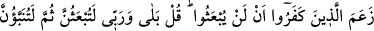
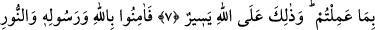
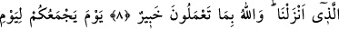
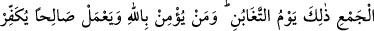
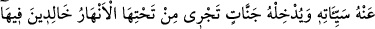
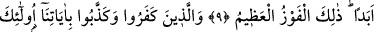
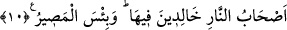
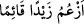
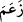

MAHŞER VAKTİNDE
SİZİ TOPLAYACAĞI GÜN
7. İnkâr edenler, kesinlikle diriltilmeyeceklerini ileri sürdüler. De ki: Hayır!
Rabbime andolsun ki mutlaka diriltileceksiniz, sonra yaptıklarınız size haber
verilecektir. Bu, Allah’a göre kolaydır.
8. Onun için Allah’a, Peygamberine ve indirdiğimiz o nûra (Kur’an’a) inanın.
Allah yaptıklarınızdan haberdardır.
9. Mahşer vaktinde sizi toplayacağı gün, işte o zarar günüdür. (Ancak) kim
Allah’a inanır ve yararlı iş yaparsa, Allah onun kötülüklerini örter, onu (ve
benzerlerini), içinde ebedî kalacakları, altlarından ırmaklar akan cennetlere sokar.
İşte büyük kurtuluş budur.
10. İnkâr eden ve âyetlerimizi yalanlayanlara gelince, işte onlar cehennem
ehlidirler. Orada ebedî kalacaklardır. Ne kötü gidilecek yerdir orası!
“İnkâr edenler, kesinlikle diriltilmeyeceklerini ileri sürdüler.” Âyetteki “za’m”
bilme iddiâsında bulunmaktır. Arapçada “__WORD__ demek, “ben Zeyd’in ayakta
olduğunu ileri sürüyorum” demektir. Bu âyette cümlenin “__WORD__/zeame” fiili ile başlaması,
inkâr edenlerin bu hükümlerine iddiâla ve sözlerinden başka bir delillerinin olmadığına
işâret etmek içindir. Âyetin başındaki “zeame” fiili iki mef’ul almaktadır. Tıpkı “ilim”
masdarı gibi. Burada dilbilgisi kuralına göre “__WORD__” edatı ve başında bulunduğu cümle, iki
mef’ul yerine geçmektedir. “__WORD__” edatı, “enne”nin şeddesizidir, yoksa fiili muzâriyi
nasbeden “__WORD__” edatı değildir. Eğer bu edat fiili muzâriyi nasbeden “__WORD__” edatıdır dersek,
aynı âyette geçen “len” edatı da öyledir. Bu takdirde bir nasbedici edat bir diğer
nasbedici edatın başına gelmiş demek olur ki bu da doğru değildir. Âyette “İnkâr
edenler” ifâdesiyle Mekke kâfirleri kasdedilmektedir. Buna göre âyetin mânâsı, Mekke